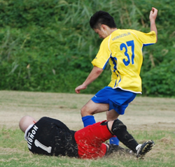
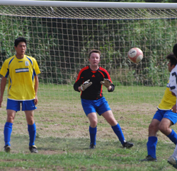

|
Misato, Saturday 5th September
Very much a game of two halves. Geckoes terrible in the first 45 mins, conceding two goals and being thoroughly outplayed by Sala, who were clearly more up for it than we were.
The Geckoes showed their resolve after the break, creating chance after chance and being held out by the excellent Sala keeper (the now 56 year old Taylor, who used to play for the Geckoes back in the early 70's).
Eventually the Geckoes pulled two goals back, first by the man-of-the-match Jonus, and then through an excellent individual effort by the rampaging Andy Gill. Andy actually deserves a special mention as not only did he produce one of his best performances for the Geckoes, but he managed to do so despite playing with an undetected broken rib. The docs say that he will be out for 4-6 weeks, but the Geckoes elders have pin-pointed the fact that he obviously needs to bulk up more to protect himself, and as such has been prescribed club's very own Get Fat Quick Diet.
The game was finely poised at 2-2, however the brave Geckoes keeper Yasu injured his hand and had to be replaced between the sticks by Brommy, who promptly pulled off a wonder save from the Sala midfielder (ok, not exactly wonder save, but still a save and it was the only thing of merit I did during the game so I am claiming it).
The Geckoes continued their attacking waves, and it seemed only a matter of time before they got the winning goal. Eventually it came from midfield schemer, Kousuke, who slotted in well from a great pass from Jonus. The Geckoes managed to hold on for a famous victory despite the late sending off of Kazz. All in all, a good start for the season for the boys in yellow, but they will need to put in better performances than this to better last season's 5th place.
Man of the Match - Jonus.
Report by Simon Bromwell
|

 |